Shortcut to this page: ntrllog.netlify.app/security
Info provided by Counter Hack Reloaded (Ed Skoudis, Tom Liston), Network Security Principles and Practices (Saadat Malik), and Certified Ethical Hacker v9 Study Guide (Sean-Philip Oriyano)
This is an extension of the computer networking resource. Well, we’ll see where this goes — I’m writing this as the class goes.
Firewalls decide what kind of traffic is allowed into and out of a network.
Hardware-wise, a firewall isn't anything special; just another computer.
The more general term for what a firewall does is "packet filtering". A firewall is a type of packet-filtering device. (A router can also be configured to be a packet-filtering device.)
Traditional packet filters look at the headers of a packet to see what type of packet it is, where it came from, and where it's going. Specifically,
These fields are used to create packet-filtering rules, which are often called Access Control Lists (ACLs).
| Action | Source Address | Destination Address | Protocol | Source Port | Destination Port | Control Bit |
|---|---|---|---|---|---|---|
| Allow | Inside Network Address | Outside Network Address | TCP | Any | 80 | Any |
| Allow | Outside Network Address | Inside Network Address | TCP | 80 | > 1023 | ACK |
| Deny | All | All | All | All | All | All |
If a packet matches multiple rules, the simplest policy a firewall can adopt is to apply the first rule from the top that matches.
The problem with traditional packet filters is that they only look at the packet headers, which provides a very limited view of what the traffic is actually doing.
For example, the second rule above allows all TCP traffic to come in as long as the ACK bit is set. Yes, it's expected that outside traffic coming in will have the ACK bit set. But only as responses. What if there are "responses" coming in to our network, but no devices in our network ever made any requests?
This is where stateful packet filters come in. They maintain a dynamic state table that keeps track of connections that are made. This allows them to "remember" earlier packets that went through/out and make decisions about later packets.
| Source Address | Destination Address | Source Port | Destination Port | Timeout (Seconds) |
|---|---|---|---|---|
| 10.1.1.20 | 10.34.12.11 | 2341 | 80 | 60 |
| 10.1.1.34 | 10.22.11.45 | 32141 | 80 | 40 |
Notice that with this table, if we see outside traffic coming in with the ACK bit set going to one of these two devices, then we know it's an actual response.
Instead of looking at individual packets, proxy-based firewalls look at the contents of the packets. In more OSI terms, proxies focus on the application level.
(The Firewalk section later mentions this very briefly.)
Proxies extract the application data from the packets and rebuild the data into the complete application message. If it looks good, the proxy creates new packets with new headers (containing the same data) and sends them to their destination.
In a sense, they pretend to be the application for a second and see what the application would be receiving.
Traditional packet filters are fast, but their intelligence is very limited.
Stateful packet filters are smarter, but slower.
Proxy-based firewalls are the smartest, but they need the most memory and processing power.
It can be a good idea to use a combination of these three in a network. For example, a stateful packet filter can sit between the Internet and the DMZ while a proxy-based firewall can sit between the packet filter and the internal network.
The DMZ (Demilitarized Zone) is a part of the network that sits outside of the internal network. The purpose of it is to separate the machines that need to be exposed to the Internet from those that don't, where the machines that need to be exposed to the Internet are put in the DMZ. These machines are things like Web servers or DNS servers.
The DMZ also acts as a buffer so that if an attacker gets access to a machine in the DMZ, they don't immediately have access to the machines in the internal network.
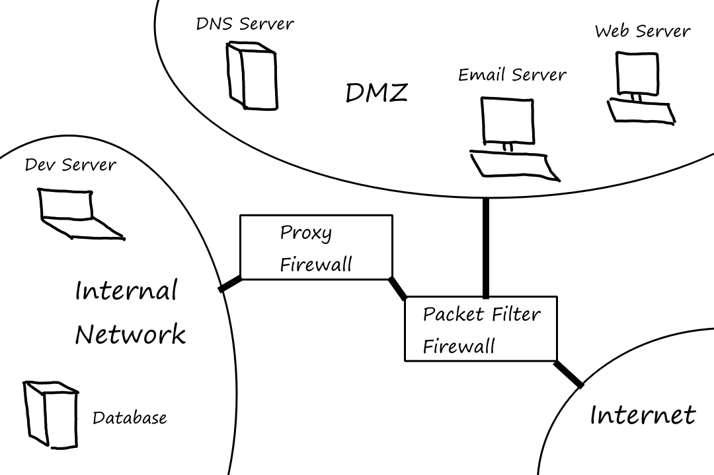
Cisco's PIX firewall was discontinued in 2013. I'll still refer to it in the present tense though.
PIX firewall is a stateful packet filter that runs on its own operating system rather than as an application on top of another OS.
ASA is the algorithm that PIX uses to examine traffic passing through it and decide what to do with it. It keeps track of:
When a host makes a connection request to the Internet, PIX stores the packet's state information (the stuff mentioned above). When a response comes back, PIX checks that the sequence number and source/destination information match what it's expecting. Honestly, nothing special, but I included it for the sake of completeness.
What is special however is that PIX does a few things to improve security. PIX proxies the connection until the three-way TCP handshake is complete. If the handshake is not completed within a certain time, the connection is dropped. This way, only legitimate connections are allowed through the PIX.
The other thing PIX does to improve security is to randomize the initial sequence number. So PIX stores the delta between the actual sequence number and PIX's randomized sequence number and replaces each packet's sequence number with the correct number so that the calculations are consistent.
Since there's no state information available to keep track of for UDP, ASA uses a timer to track UDP sessions. The timer is active as long as there is traffic. If there has been no traffic after a certain amount of time, the timer expires and no more traffic is allowed for that session.
A PIX firewall can have 2-10 interfaces, and each interface can be assigned a level from 0-100. An interface with level 0 means that the interface is connected to a network that is (assumed to be) not secure. Interfaces with level 0 are typically the ones connected to the Internet. Interfaces sitting on the private network are assigned a level of 100.
Traffic can flow freely from a high security level interface to a low one, but from low to high, there needs to be rules defined in the ACLs.
Static NAT is also needed to allow traffic from low to high.
This is because a NAT table is only populated when the inside network initiates the connection. If a device on the Internet tries to initiate a connection with the inside network, there will not be a NAT entry unless a static one is defined ahead of time.
Failover means that if a PIX starts to fail for whatever reason, a backup PIX can take over. A failover can be stateful, meaning that the current connection information is transferred to the PIX taking over. The state information is transferred via an Ethernet cable between the two PIXes.
So how is a PIX failure detected in the first place? The primary PIX and the secondary PIX periodically send hello packets to each other through a failover cable to see if the other is alive. If two consecutive hello packets are not received within a certain time, testing begins to see which PIX has failed.
If a PIX unit suddenly stops getting hello packets, it doesn't necessarily mean the other PIX unit is the failed one. The PIX's own interfaces might be down.
An ARP test is a test that a PIX unit does to see if its interfaces are working. The PIX sends ARP requests to machines and sees if it gets responses back.
Similar to how NAT translates source IP addresses, PIX's alias feature translates destination IP addresses.
Suppose a client on the internal network needs to access a web server on the DMZ.
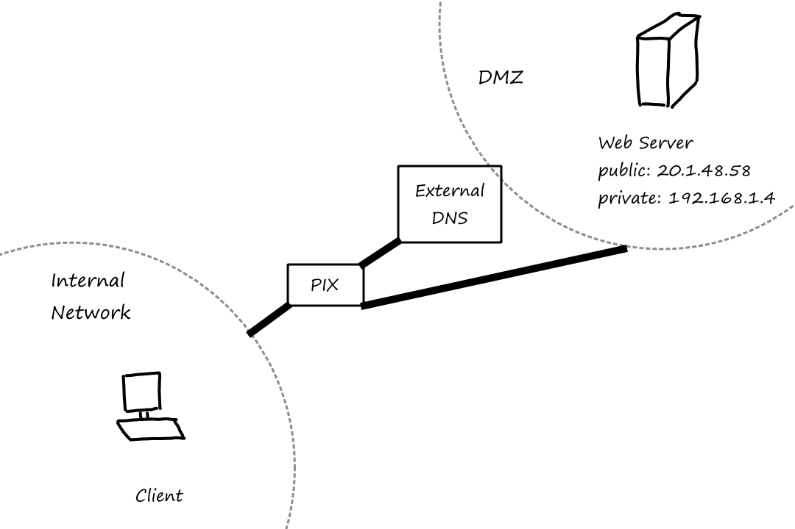
This feature helps prevent attacks on a mail server by only allowing certain SMTP commands (HELO, MAIL, RCPT, DATA, RSET, NOOP, and QUIT) to be sent to the mail server.
Reconnaisance is the act of using publicly available information to investigate a target. This includes techniques such as social engineering, physically breaking into a building, digging through trash, and searching online.
Companies have to register their domains and servers with a registration company, a.k.a. registrar. The registrar assigns the company a domain name and enters it into whois and DNS databases so that the company's servers are accessible to the Internet.
Companies have to register their DNS servers with the registrar, so information about a company's DNS servers are publicly available in whois databases. And DNS servers store IP addresses, domain names, and mail server information. So attackers querying a company's DNS servers can build a list of possible targets to attack, or at the very least, learn more about the company's network infrastructure.
A zone is a collection of DNS records for a particular domain. For example, this could be what a zone for example.com looks like:
| example.com | A | 203.0.113.09 |
| www.example.com | A | 203.0.113.09 |
| mail.example.com | A | 203.0.113.29 |
| example.com | MX | mail.example.com |
A zone transfer is an operation that asks a DNS server to send all information it has about a specified domain. It was designed to be an operation to update secondary DNS servers, but attackers have found a great use for it. Well, it works if the DNS server has zone transfers enabled.
A split DNS architecture has an external DNS server and an internal DNS server. The external DNS server only has information about servers that need to be accessible to the Internet. The internal DNS server contains all the information about the internal devices so they can communicate with each other.
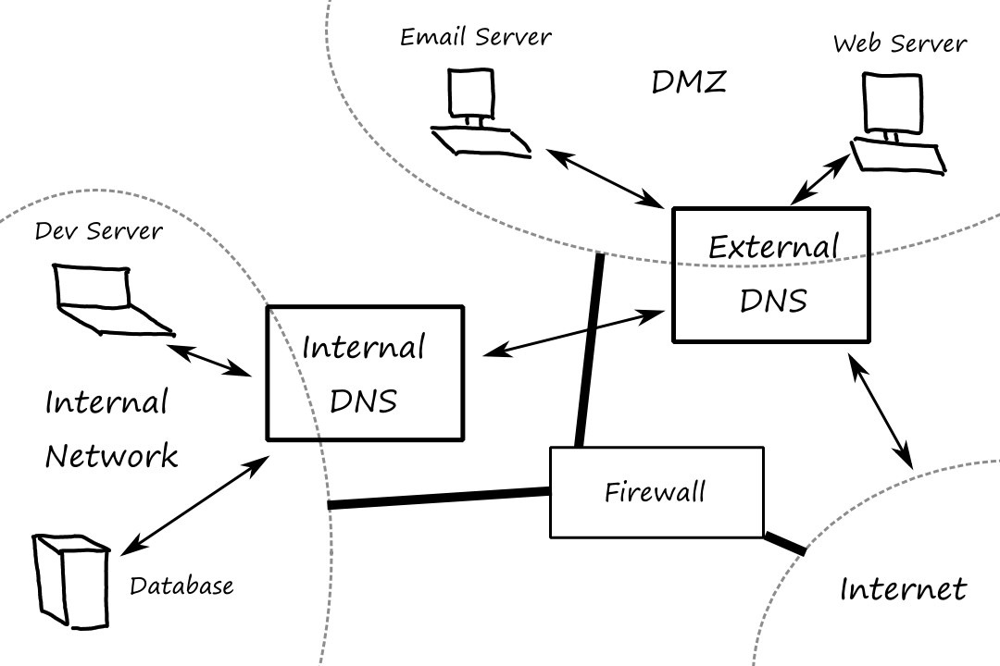
The internal DNS server never communicates with the Internet. If an internal device needs to resolve a name that is on the Internet, it asks the internal DNS server, which then asks the external DNS server.
Scanning is a process attackers use to find an opening into the network they are trying to attack.
Imagine you're looking for free Wi-Fi, so you drive around looking for networks without that lock symbol. This is kinda what war driving is. In more technical terms, war driving is the process of looking for accessible and unsecured WLANs.
A network might have one or more wireless access points that allow devices to connect to that network wirelessly. Attackers target these access points to try to gain entry into a network.
From my understanding, an access point can loosely be thought of as a Wi-Fi range extender. The difference is that access points broadcast wired signals straight from the network while range extenders rebroadcast wireless signals.
(I'm going to use CSULA as an example with absolutely no knowledge about how the network is actually set up. This is all for the sake of example.)
Let's say you connect to CSULA's network by connecting to the Wi-Fi network called "CSULA-SECURE". An access point is what allows you to see "CSULA-SECURE" no matter where you are on campus. Alternatively, an access point can be configured to allow devices to connect to CSULA's network but under a different Wi-Fi network, say "CSULA-EMPLOYEES". In the latter situation, a new WLAN is created.
While the password/authentication required to connect to "CSULA-SECURE" may be strong, if the password/authentication required to connect to "CSULA-EMPLOYEES" is weak, then attackers can enter the network through this unsecured WLAN.
In that little CSULA example, the Wi-Fi names are referred to as ESSIDs (Extended Service Set Identifiers). They're usually publicly visible so that you can find and connect to them. But some ESSIDs can be hidden. While an ESSID may be hidden, that doesn't mean it's necessarily hard to obtain it.
The goal of war driving, from an attacker's perspective, is to find as many of these ESSIDs as possible to increase the chances of finding an unsecured network.
The attacker may already have a specific target in mind, or they may just be looking for any vulnerable targets in the area.
In the 802.11 (a.k.a. Wi-Fi) protocol, a device can send a probe request message to an access point. A probe request is supposed to include the ESSID so that only the access point(s) with that specified ESSID responds. But access points can be (and often are by default) configured to respond to probe requests that specify "Any" as the ESSID. And under the 802.11 protocol, the response must include the ESSID. So an attacker can just send out a bunch of probe requests with ESSID="Any" to all access points in the area and gather their responses, generating a nice list of ESSIDs.
NetStumbler, which is one of the most popular scanning tools, does this probe request stuff. NetStumbler goes even further by collecting a whole slew of information, including encryption method. An attacker using NetStumbler can easily identify networks that are using weak encryption.
So what happens if an access point is configured to ignore probe requests with ESSID="Any"? Well, under the 802.11 protocol, access points periodically send out beacon packets to synchronize their clocks with the devices that are connected. These beacons usually include the ESSID, so an attacker can also capture these beacon packets.
This can be done by (loosely speaking) putting the device into rfmon mode, a.k.a. monitor mode, which allows the device to collect all wireless traffic, not just the traffic directed to that device.
So what happens if an access point is configured to omit ESSIDs from beacons? Well, any wireless traffic between an access point and all devices connected to it will have the ESSID information, so an attacker can just use rfmon mode to collect wireless traffic and get the ESSID from there.
Wellenreiter is a tool that does this rfmon mode stuff. Futhermore, Wellenreiter also listens for ARP and DHCP traffic to determine MAC and IP addresses.
Okay, so the ultimate scenario: what if
Well, the attacker can use a tool called ESSID-Jack to force traffic. Before using the tool, the attacker needs to obtain the MAC address of the access point, which can be done by using Wellenreiter to sniff for management/beacon frames, which will have the MAC address.
Once the attacker has the MAC address of the access point, they can pretend to be that access point and send a deauthenticate message to the broadcast address, disconnecting all devices connected to that access point. As the devices try to reconnect, they will generate traffic for the attacker to collect.
Let's say the attacker found an access point advertising an unsecured WLAN and was able to connect to the network. The next thing an attacker would want to do is to discover other devices connected to the network and build a map of the network.
One simple way to do this is to ping all possible addresses and see which addresses respond. They send an ICMP Echo Request packet and look for an ICMP Echo Response message. If there is no response, it could mean the address is not being used or the ping/response is being filtered.
Many networks block ping messages, so an attacker could send a TCP or UDP packet instead.
After discovering which hosts are alive, attackers would want to know how they are connected to each other (the network structure/topology).
They can use traceroute to see how many routers there are from the attacker to any destination.
Tracerouting uses the TTL field in the IP header. The TTL is decremented by the maximum of
Packets are usually sent in less than a second, so the TTL is usually decremented by `1`.
If a router decrements the TTL to `0`, it will send an ICMP Time Exceeded message, where the source address of the message is the IP address of that router. So if an attacker starts a traceroute with a TTL of `1`, it will learn the IP address of the first router. If the attacker starts a traceroute with a TTL of `2`, it will also learn the IP address of the second router. And so on.
Cheops-ng is network-mapping tool that uses pings and traceroute.
Pretty much, use firewalls and router packet filtering.
After knowing the addresses of live systems and gaining a basic understanding of the network topology, an attacker would want to find potential entryways into the systems by finding open ports. In doing this, the attacker can also learn which services are in use. For example, if port 80 is open, then most likely a Web server is running on that machine.
A port scanner sends packets to various ports to determine if any service is listening there.
Nmap is the most popular port-scanning tool.
TCP Connect scans attempt to complete the three-way handshake with each port. So they send a SYN, wait for the SYN-ACK, and then send an ACK along with FIN to tear down the TCP connection.
If a port is closed, the target machine doesn't send the SYN-ACK. Depending on the machine and the network configurations, it could return nothing, a RESET packet, or an ICMP Port Unreachable packet.
Connect scans are really easy to detect because completed TCP connections are logged in the system.
SYN scans only do the first two parts of the three-way handshake. They send a SYN and wait for the SYN-ACK. If they get the SYN-ACK, they send a RESET to abort the connection.
Same as earlier, if a port is closed, the attacker receives no response, a RESET packet, or an ICMP Port Unreachable packet.
Because the TCP connection is never established, there is no evidence of it in the logs. However, routers, firewalls, and other systems can still detect incoming SYN packets.
Another advantage of SYN scans is that they are faster because they don't have to wait for the connection to be torn down.
These scans work by sending packets that are not typical in normal network traffic.
FIN scans send packets with the FIN bit set. Xmas Tree scans send packets with the URG, ACK, PSH, RST, SYN, and FIN bits set. And Null scans send packets with no bits set.
For all of these scans, if a port is closed, it returns a RESET packet. If the port is open, it sends nothing. If an attacker doesn't receive a response from a port, it doesn't necessarily mean that that port is open; the traffic could've been blocked by a firewall.
It may seem like if we want to defend against port scanning, then we would just block all incoming traffic into our network. However, that would prevent us from going on the Internet (how would we get results from the Internet if we blocked all traffic?)
So we have to allow some traffic into our network, at the very least, packets with the ACK bit set. It should be pretty obvious what an ACK scan is at this point.
Unfortunately for the attackers, different operating systems behave differently in response to ACK packets. For example, some operating systems send a RESET if the port is open, whereas others send it if the port is closed. So an ACK scan isn't really used for finding open ports. It's more for finding out if a machine is running at the target address.
The one big problem with all of these scans is that the network can identify where they're coming from by looking at the source IP address of the messages. But there are ways for an attacker to involve another machine so that it looks like the scans are coming from somewhere else.
Some FTP servers allow users to connect to them and request that server to send a file to another system. So an attacker would request the FTP server to forward a file to a specific port on the target machine. Depending on the response, the attacker will know whether the port is open or closed. And best of all, for the attacker, the traffic to the port is coming from the FTP server, so the attacker's IP address is not exposed.
The firewalls and routers may not see the attacker's IP address, but the FTP server's logs will have it.
Okay, so what if there's no FTP server for the attacker to use? If the attacker can find an idle machine -- one that is not sending any/much traffic -- then the attacker can communicate with this machine and analyze the IP ID field of its messages.
The IP header has an IP ID field that is used for packet fragmentation. If a packet is too big (recall MTU), it gets broken up into smaller fragments. All those fragments have the same IP ID value so that they can be reassembled correctly at the target destination.
Obviously, the IP ID field must be unique, otherwise unrelated packet fragments get combined into one big mess. Most operating systems, notably Windows, just increment the IP ID field by 1 to achieve uniqueness.
If the IP ID value is `X+1`, then the port is closed.
When the idle machine "sent" the SYN packet to the target port, if the port was closed, it would've sent nothing or a RESET to the idle machine. The idle machine, in response to either of these two situations, didn't send any packets, keeping the IP ID field at `X`.
Then when the attacker sent a SYN packet to the idle machine, the idle machine sent a SYN-ACK to the attacker, incrementing the IP ID field by `1`.
If the IP ID value is `X+2`, then the port is most likely open.
When the idle machine "sent" the SYN packet to the target port, if the port was listening, it would've sent a SYN-ACK to the idle machine. The idle machine, getting a SYN-ACK for non-existent connection, would've sent a RESET packet, incrementing the IP ID field by `1`.
Then when the attacker sent a SYN packet to the idle machine, the idle machine sent a SYN-ACK to the attacker, incrementing the IP ID field by `1` again.
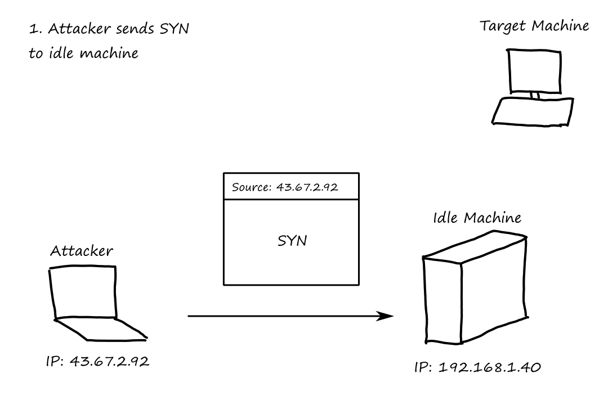
It is not guaranteed to be open because the machine may not be truly idle; it may send a packet in response to something completely unrelated. So an IP ID value of `X+2` could falsely report a closed port as open.
UDP scanning is another option, but it's less reliable. Because there's no connection that needs to be established, a UDP port does not need to send anything at all. So no response could either mean the port is closed, the port is open and not sending anything, or the port is open but the packets are getting filtered.
To reduce their chances of getting blocked by traffic filtering, attackers can disguise their packets to look like normal traffic. One way to do this is to set the source port of their packets to something that one would reasonably expect traffic from. For example,
Attackers can also try to hide their packets by generating decoy packets with fake source addresses. The attacker's actual address must be included along with the fake addresses so that the attacker can get the results from the scan back.
Nmap has different options for how fast or slow packets should be sent. Maybe they want to avoid being detected and will spread out the packets. Or maybe they want to conduct a scan as quickly as possible and send out packets quickly.
Besides finding out which ports are open, the attacker would also want to know what operating system(s) they're dealing with. That way, they can research particular vulnerabilities for that system.
They do this by taking advantage of the fact that RFCs do not define how a system should respond to invalid combinations of TCP control bits (recall the FIN, Xmas Tree, and Null Scans). Therefore, different operating systems respond to unexpected flags differently.
So this is a list of valid + invalid packets attackers can send:
This is called TCP stack fingerprinting.
Another way to help determine the operating system is to analyze the sequence number (similar to idle scanning). Some operating systems have predictable sequence numbers, so an attacker could send SYN packets to open ports and see how the sequence number in the SYN-ACK packets change.
inetd, you can comment out its line in /etc/inetd.confxinetd, you can delete the file /etc/xinetd.d/[service]I've briefly mentioned that traffic blocked by a firewall can make the results of scans harder to interpret (if there's no response, was the port closed or was the traffic filtered?). So naturally, if attackers can figure out what the filtering rules are, they can further determine which ports are open.
Firewalk is a tool that helps determine filtering rules.
The main idea behind Firewalk is that it sends a packet to a machine that is on the other side of the firewall (we'll call it the target machine), and if it receives a response from that machine, then the packet is not being filtered by the firewall. If no response is received, then the packet was likely filtered by the firewall.
First, Firewalk determines the number of router hops to the firewall by sending a series of packets with incrementing TTLs (like in traceroute).
Once Firewalk knows how many hops it takes to reach the firewall, it will then start sending packets to the target machine on the other side of the firewall. The packets will have a TTL of (number of hops to firewall + `1`).
If a packet gets through the filter, an ICMP Time Exceeded message will be sent by the machine that is exactly one hop away from the firewall. Or, if the machine that is exactly one hop away from the firewall is the target machine, then it might respond with an ICMP Port Unreachable or even a SYN-ACK. Whatever the response is, if the attacker received something, then they know the firewall allowed their packet through.
The TTL is important for Firewalk to work correctly; it can't just send a packet to the target machine with an arbitrary TTL. If the TTL is too small, then the packet won't even reach the firewall.
Firewalk doesn't work against proxy-based firewalls because proxies do not forward packets. Instead, the proxy gets the packet on one side of the gateway and creates a new connection on the other side, wiping the TTL information.
| What the Attacker Knows | Tools |
|---|---|
| List of address of live hosts on the network | Ping and Cheops-ng |
| General network topology | Traceroute and Cheops-ng |
| List of open ports on live hosts | Nmap port scan |
| Operating system types of live hosts | Active OS Fingerprinting |
| List of ports open through packet filters on the target network | Firewalk |
Now, the attackers have a lot of information, but that information alone isn't enough for attackers to get into target systems. What they need is a vulnerability to exploit.
Vulnerability scanners automate the process of connecting to a target system and checking to see if there are any vulnerabilities. They have a database of known vulnerabilities and check to see if any of them are present on the target.
For example, if the attacker knows they're dealing with Windows machines, they can check to see if they're misconfigured to allow the attacker to gather a complete list of users.
Because it's free and supports custom scripts (plug-ins).
Nessus is based on a client-server architecture, where the server does all the heavy lifting (vulnerability database, scanning engine) and the client reports the results.
They look for particular exploits based on the vulnerabilities.
In case you haven't heard, scanning tools are pretty noisy. Port scanners and vulnerability scanners send (tens/hundreds of) thousands of packets to the target network, and all of this traffic can be detected by IDS and IPS tools.
Traffic associated with an attack typically looks different from normal traffic. Network-based IDSs and IPSs have a database of attack signatures that they try to match against network traffic. If they think there's an attack going on, they have some way of warning an admin.
By changing the packet structure or syntax in a way that the IDS or IPS does not expect.
Recall that IP packets can be fragmented and reassembled once they reach the destination.
In order to analyze the traffic, IDS/IPS systems need to store the packets in memory/buffers. One thing attackers can do is to send a bunch of fragments, enough to overload their memory/buffers.
However, something more interesting attackers can do is to send fragments in creative ways. For example, the attacker can split their packet into two fragments so that neither of them look suspicious on their own, but result in a dangerous packet when combined.
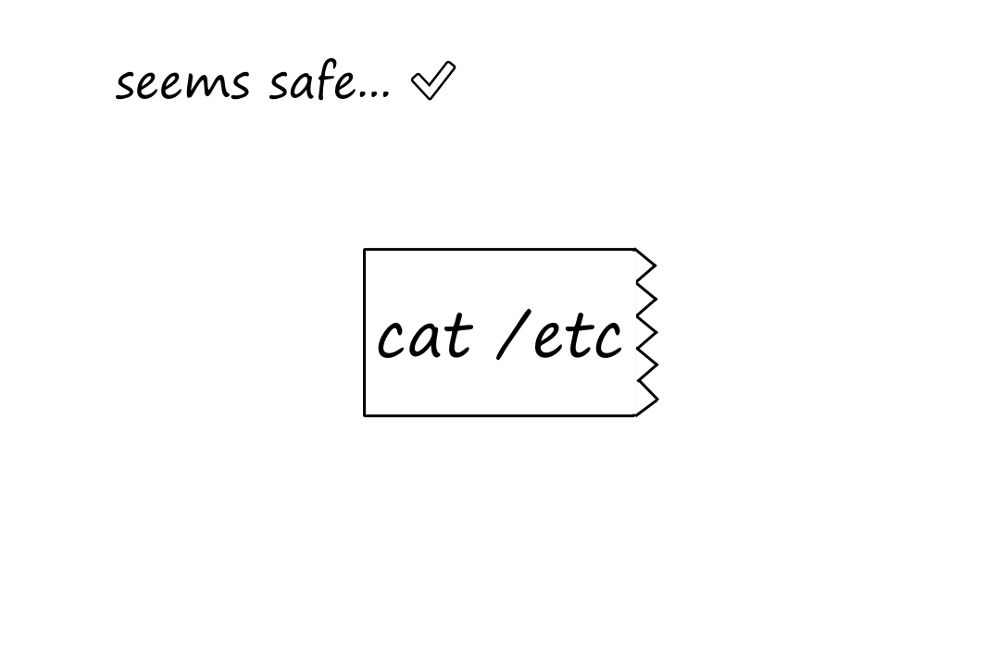
This one is even more interesting. The fragment overlap attack is based on manipulating the fragment-offset field of the IP header. One fragment has the TCP header, and a piece of harmless-looking data that doesn’t trigger the IDS/IPS. The second fragment has an offset value that intentionally causes this second fragment to overlap the first fragment. When the two fragments are combined, a dangerous packet is created.
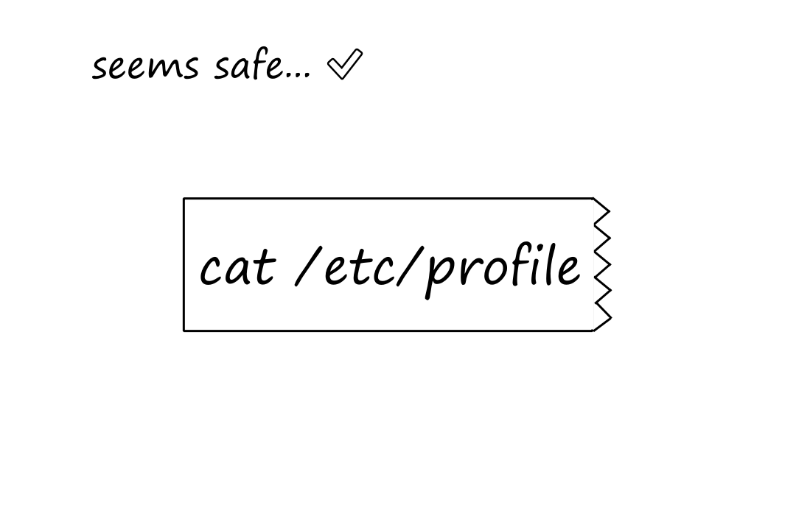
See title.
After scanning the network and building a list of target systems and their vulnerabilities, it's time for the attacker to attack.
Attackers carry out buffer overflow exploits by sending a bunch of data to a program, more data than the program is expecting. This works when the (developer who wrote the) program doesn't check the size of user input before moving it around in memory.
Suppose we have this program that asks for user input.
void ask_input(const char *field)
{
char myBuffer[50];
printf("Enter your %s:\n", field);
gets(buffer);
return;
}This is what the stack would look like when that function is called:
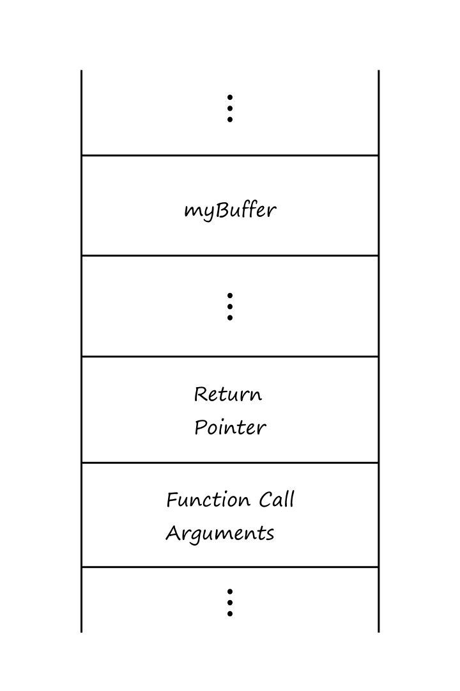
The return pointer is where execution goes after the function returns.
myBuffer can hold 50 bytes. What happens if more than 50 bytes is entered? (For example, let's say a long string of As.)
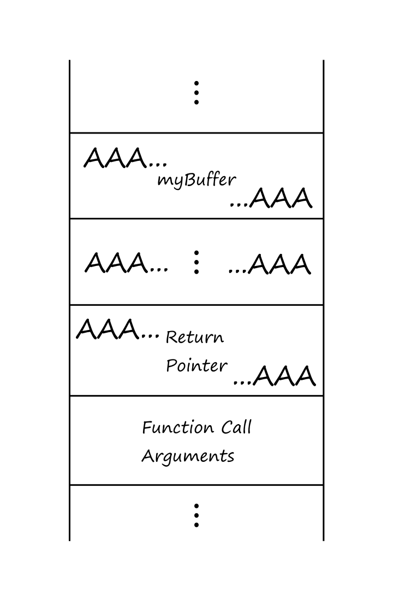
The return pointer is now filled with a bunch of As. So when the computer tries to go to the next memory location of 0x41414141..., the program will crash. (41 is A in hexadecimal.)
So how can an attacker take advantage of this? The attacker could enter ASCII characters corresponding to machine language code that executes whatever command they want. They would need to enter it in a way such that myBuffer contains the malicious command* and the return pointer is overwritten to point back into myBuffer†.
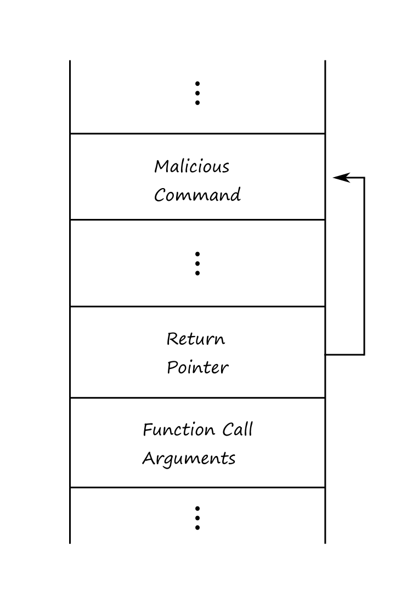
*†If this sounds complicated, it's because it is. Everything has to be formatted precisely in order for this to work.
The most useful command to force the computer to run is to open the command shell, because then the attacker can run any command they want on the shell.
How do attackers know a program is susceptible to a stack-based buffer overflow attack, especially if they don't have access to the source code? One way is to analyze the program by using a debugger. A debugger can show the outputs of a CPU's registers, including the value of the return pointer.
Suppose the attacker enters a string of As ("AAA...AAA") and sees this when they inspect the return pointer:
return pointer = AAAA
Now they need to figure out which part of the string is being injected into the return pointer. So they can try a string like "ABCDEF...XYZABC...". Suppose they see this return pointer:
return pointer = DEFG
Next with "ABCDEF1DEF2DEF3...":
return pointer = DEF8
Now the attacker knows exactly which location in the string modifies the return pointer.
But what value should the return pointer be? That is, how does the attacker know exactly what address their malicious command will be at?
Instead of finding that exact address, they can put in a guess and try to force the execution towards their malicious command.
A NOP (No Operation) instruction tells the processor to do nothing for a single CPU cycle.
Attackers can prepend their malicious command with a bunch of NOPs, creating a NOP sled. If the attacker luckily guesses a memory address that contains a NOP, then execution will go through all the NOPs to eventually run the malicious command.
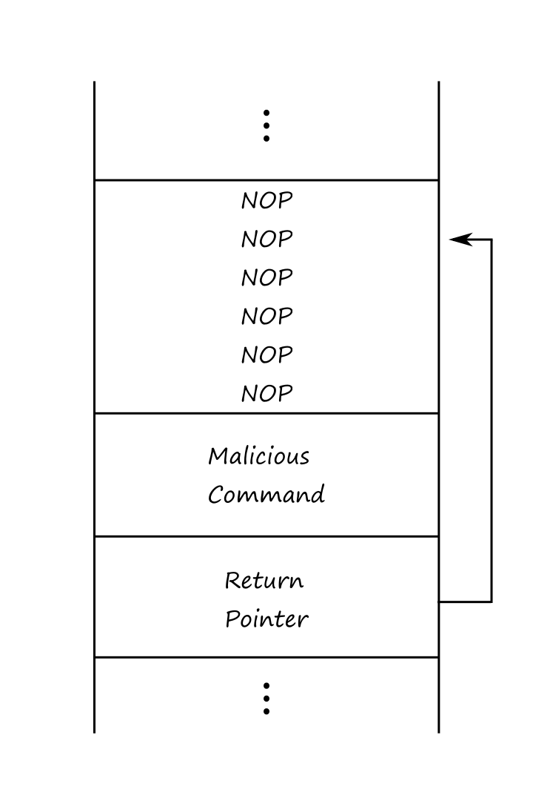
The combined NOP sled and machine language code (malicious command) is sometimes called the exploit's egg. The entire package, including the code that alters the return pointer, is formally called an exploit, informally called a sploit.
StackGuard is a security mechanism built into compiled programs that helps protect against stack buffer overflow attacks. It inserts a field called a canary next to the return pointer on the stack. The canary is a hash of the current return pointer and a secret. If the system detects that the canary has been altered, then it stops execution of the program.
The term canary comes from the fact that coal miners used to bring canaries into coalmines. If the canary died, then it indicated that the air was bad.
Stack Shield is a program that protects against stack buffer overflow attacks by storing the return pointer in a location outside of the stack.
Passwords are generally stored in a file somewhere on a system. Each password in the file is stored in their encrypted/hashed format so that if an attacker somehow obtained access to the file, the passwords wouldn't be obvious. When a user logs in, the system encrypts/hashes the inputted password and compares it with the encrypted/hashed entry in the password file, granting the user access if they match.
Obviously, an attacker can try to guess random passwords to see if they get lucky. But this is slow, because the attacker has to wait for the system to validate it. Also, the system can limit how many attempts are allowed.
Instead, an attacker can bypass the system validation completely by obtaining the password file. Then they generate password guesses and encrypt/hash them, comparing them with any entries in the password file to see if there's a match. This is password cracking.
Generating passwords, encrypting/hashing them, and comparing them against the password file can all be done locally on the attacker's machine. They can guess thousands or tens of thousands of passwords per second.
A rainbow table is a precomputed list of encrypted/hashed passwords. The attacker generates this list ahead of time so that if the attacker is able to obtain the password list, the attacker just has to compare entries in the password list with entries in the rainbow table.
Of course, obtaining the password file is easier said than done.
In Windows, passwords are stored in the SAM database of the machine. In order to access the SAM database, the attacker would have to find a way to gain admin access to the machine.
If trying to access the SAM is too difficult, an attacker could try looking in other places. For example, a copy of the SAM database is stored in a file when a backup of the machine is performed.
One more alternative is to sniff the network for Windows challenge-response authentication packets.
Passwords in Linux systems are stored in /etc/passwd, /etc/shadow, or /etc/secure. Again, the password file is only readable by users with root access, so the attacker must find a way to gain root access. One way is to perform a buffer overflow attack of a program that runs as root.
Another way is to cause a process that reads the password file to crash. When a process crashes, it might generate a core dump file, which contains the contents of the process's memory before it crashed. So if an attacker can crash a process that reads the password file, then the core file might have the entries of the password file.
We're all told to use https instead of http. The "s" is for SSL (now replaced by TLS), which encrypts traffic from the browser to the server. However, there are still many attacks that can be performed even if SSL/TLS is used. Fundamentally, this is because SSL/TLS only protects data in transit; it doesn't prevent bad data from being sent.
Account harvesting is the process of discovering and collecting legitimate user IDS and/or passwords. This technique works when an application has a different error message for users who type in an incorrect user ID than for users who type in a correct user ID with an incorrect password. For example, suppose an attacker tries a user ID + password combo and the application says "Invalid user ID". Then suppose the attacker tries another user ID + password combo and the application says "Invalid password". Then the attacker knows the user ID belongs to an actual user.
After a user logs in to a Web application, most Web applications generate a session ID to keep track of the user’s browsing session. This session ID is passed back and forth for all interactions (e.g., navigating pages, submitting forms) so that the application can keep track of which user is doing what.
There are three common ways session IDs are implemented:
If an attacker can guess a valid session ID, then they can trick the application into thinking that the attacker is another user. This is called session cloning.
If the application generates predictable session IDs, then this makes it easier for the attacker to guess them. To see if the session IDs are predictable, the attacker creates an account and sees what the session IDs look like every time they log in.
If they manage to guess a valid session ID, then they can perform the attack by modifying the URL (if URL session tracking is used), changing the hidden form elements (if they're used), or by editing the cookie file (if cookies are used).
There are also Web proxy tools allow information passing between the browser and the server to be inspected and edited. The attacker starts a proxy on their machine so that all traffic goes through the proxy.
Often, the values entered in user input fields are used to build SQL queries. If the attacker enters part of an SQL statement in the user input field, the resulting query could return or update information that the attacker is not authorized to access.
For example, suppose an application has a user input field for a tracking number. Suppose the application builds the SQL query like this:
SELECT * FROM orders WHERE tracking_number = $_REQUEST['tracking_number']
where $_REQUEST['tracking_number'] is the value of the input field. If the attacker enters "123456789 OR TRUE", then the SQL query would look like:
SELECT * FROM orders WHERE tracking_number = 123456789 OR TRUE
This ends up returning all orders, not just the one where the tracking number is 123456789.
Cryptography is how information is kept secret. It aims to provide the following:
In symmetric cryptography, the same key is used to encrypt and decrypt information. It's good for encrypting lots of data because it is very fast. But there are issues with using the same key to encrypt + decrypt, and there is no nonrepudiation.
Suppose you're sending an encrypted message to me. In order for me to decrypt the message, I would need the key. So you would need to send the key to me, but an attacker can intercept it.
Okay, so let's say both of us have already have the key so you don't need to send it to me. What happens if we need to send information to another user? ☝️
What happens if we need to change keys? ☝️
Suppose I receive an encrypted message saying that you'll pay me $1000. The problem for you is that you never sent that message to me. Since we both have the same key, I encrypted that message and sent it to myself, making it look like it was from you.
Asymmetric cryptography provides key management benefits and nonrepudiation by using a public key and private key system. Each person gets a pair of keys uniquely assigned to them. Either key can be used to encrypt information, but only the other key can be used to decrypt. That is, if the public key is used to encrypt, only the private key can be used to decrypt. And if the private key is used to encrypt, only the public key can be used to decrypt. As their names imply, the public key is visible to the public while the private key is meant to be used only by the owner.
Suppose you want to send a secret message to me. You'll do that by finding my public key and using it to encrypt your message. Then I'll use my private key to decrypt the message. There was no need for you to send a key, and even if an attacker intercepted the message, they won't be able to decrypt it without the private key, which only I own.
But how do I know the message came from you? You can include your digital signature by using your private key to generate it. Then I can use your public key to verify your signature.
A hash function is an algorithm that transforms an input into a hash value. When using a one-way hash function, it's not possible to derive the original message from the hash value.
Hashing is used to create and verify digital signatures.
To generate a digital signature:
To verify a digital signature:
What if you never sent a message to me, but I received a message with a digital signature claiming to be yours? In this scenario, suppose an attacker is pretending to be you and puts a public key (the attacker's, not yours) online, advertising that it is "your" public key. Then the attacker uses their private key to create the digital signature and sends it to me. When I use "your" (the attacker's) public key, the signature will verify correctly, and I'll believe the message is yours.
Digital certificates prevent this situation from happening.
You can register your key pair with a certificate authority (CA). The CA issues you a digital certificate with your public key on it and signs it using the CA's private key. Now, if I want to check that an advertised public key is actually yours, I can use the CA's public key on the digital certificate to see your registered public key and compare what's advertised with what's on the certificate.
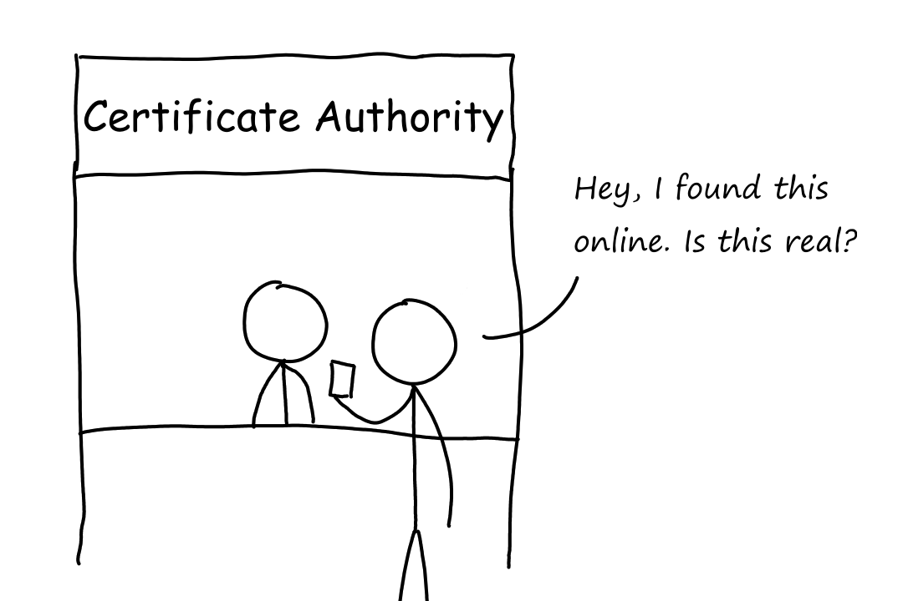
A router/switch's port can be configured to only allow certain MAC addresses to connect to the LAN. This mechanism is called port security.
This was described in the networking resource as switch poisoning.
A CAM (Content Addressable Memory) table is a table in a switch that stores MAC addresses. Specifically, they store mappings from MAC addresses to ports.
Recall that when a switch receives a frame and the destination MAC address isn't in its switch table, the switch broadcasts the frame to everyone. An attacker takes advantage of this by sending a bunch of frames with fake source MAC addresses to a switch, filling up its CAM table. So when a legitimate frame arrives at the switch, the frame's destination MAC address won't exist in the CAM table and the switch will broadcast (flood) the frame to everyone.
This has two effects. The first is that network traffic increases due to flooding, and this can result in a denial of service (DoS). The second is that the attacker can receive the flooded frames.
Console> (enable) set port security 3/2 maximum 20
This command configures port 2 on module 3 to have a maximum of 20 MAC addresses associated with it.
(A module is a group of ports.)
Limiting the number of addresses that a switch can learn on a port prevents the switch's CAM table from filling up. Note that the CAM table can still learn entries from other ports, so legitimate traffic continues normally.
A switch's IP permit list is a list of IP addresses that are allowed to send traffic to the switch. The type of traffic (e.g. Telnet, SSH, HTTP, SNMP) can also be specified.
Console> (enable) set ip permit enable
Console> (enable) set ip permit 172.16.0.0 255.255.0.0 telnet
Console> (enable) set ip permit 172.20.52.2 255.255.255.255 snmp
Console> (enable) set ip permit 172.20.52.3 all
Broadcast floods can be controlled.
One way is with threshold limits can be set for broadcast traffic. For example, a rule can specify that, at any second, if more than 75% of the traffic consists of broadcast traffic, then all additional broadcast traffic will be dropped for that one-second period.
Another way is to use protocol filtering to allow only certain protocols to send broadcasts. A protocol group can be defined to have certain protocols and ports associated with that group. Then, broadcast messages from only those protocols will be sent to only those ports.
A normal VLAN allows all devices connected to the switch to communicate with each other. This means that if a device is compromised, other devices on the same VLAN can be attacked from the compromised device.
A private VLAN divides the ports into groups to restrict communication between devices. There are three types of private VLAN ports:
Hosts on isolated ports cannot receive traffic directly from other hosts. All communication is done through the promiscuous port.
A gratuitous ARP is a message that a device sends to let other machines know its IP address and MAC address. An attacker who has gained access to a compromised device on the LAN can force the machine to send out gratuitous ARPs with addresses that don't belong to the compromised machine. For example, the attacker can spoof the IP address of the network's default gateway in the gratuitous ARPs. This allows the attacker to analyze and/or drop all traffic in the LAN.
Private VLANs protect from this type of attack by providing isolation between the ports on the VLAN.
A sticky ARP also helps against this type of attack. The sticky ARP feature makes sure that ARP entries learned by the switch cannot be changed. So if an attacker takes over a device and tries to send out gratuitous ARPs with different addresses, the switch won't acknowledge those gratuitous ARPs (because the switch already learned the compromised device's address before it was compromised).
802.1x is the standard that defines how authentication should work for devices connecting to LANs.
All three entities communicate using the Extensible Authentication Protocol (EAP).
There are four types of EAP messages:
These four types can be further classified into different types, such as:
The identity request message is sent by the authenticator to ask the supplicant for its identity information (such as username). The NAK response message is sent by the supplicant to the authenticator if the authentication mechanism offered by the authenticator is unacceptable to the supplicant.
These are the steps for what happens when a supplicant tries to connect to a port:
EAPOL stands for EAP Over LANs. It defines how EAP messages are formatted. Similar to how TCP segments are encapsulated with TCP headers and IP datagrams are encapsulated with IP headers, EAP messages are encapsulated with EAPOL headers.
EAPOL is used for communication between the supplicant and the authenticator. RADIUS is used for communication between the authenticator and the authentication server.
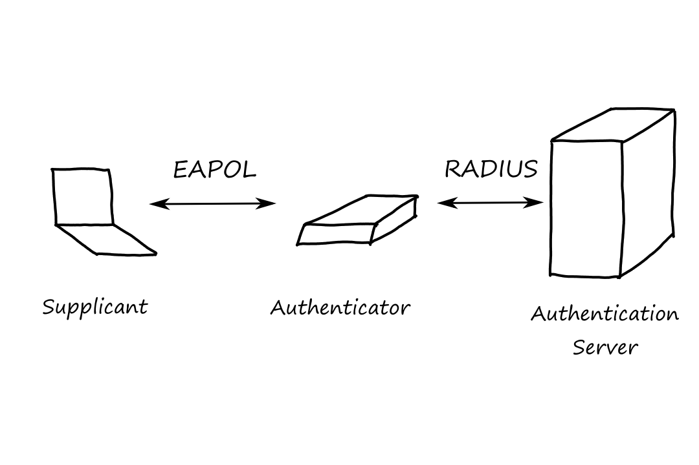
Private IP addresses are also called RFC 1918 addresses.
NAT is the mechanism that changes a packet's IP address to something other than what they originally were. It was primarily a way to reduce IP address consumption, but since it can hide a network's IP address, it also offers some security.
In normal NAT, each RFC 1918 address is converted to its own unique routable IP address. There is also Overload NAT, a.k.a. Port Address Translation (PAT), where all RFC 1918 addresses are translated to one routable IP address.
The router that does NAT/PAT has a NAT table that keeps track of the translations. The NAT table only gets populated if a device sends something out to the Internet.
Here's where the security of PAT comes in. If some random messages destined for the routable IP address arrived at the router without anyone asking for them, the router would drop those messages because it would not know which device to send them to (there would be no entries in its NAT table because no one asked for those messages).
Since NAT only looks at the port number and nothing else, NAT is not that secure. Basically, NAT is not secure because it doesn't do what stateful or proxy-based firewalls do.
A VPN is simply a connection between two devices or networks that have a public network between them. They're typically used to carry traffic privately over the Internet, so a VPN can be thought of as a tunnel between two devices/networks.
Most people are familiar with a VPN as a way to have their traffic encrypted (looking at you, NordVPN).
But not all VPNs encrypt traffic. After all, the primary purpose of a VPN is to allow for communication between two devices or networks.
Intranet VPNs connect private networks belonging to the same organization. For example, a remote office connected to headquarters.
Extranet VPNs connect private networks belonging to different organizations.
IPsec stands for IP Security. It is a suite of protocols used to create VPNs.
An IPsec tunnel that connects two LANs is referred to as... wait for it... a LAN-to-LAN VPN. These are used when users in one private network need to communicate with resources in different private network.
They're also called site-to-site VPNs.
This is used to connect an individual user to a private network.
IPsec consists of three main protocols:
Broadly speaking, IKE is used to establish the rules for how the tunnel will be built and ESP applies those rules to the traffic.
Much of AH's functionality is embedded in ESP, so IKE and ESP are the ones that are mostly deployed together.
This section goes over IKEv1. However, IKEv2 is the current implementation of the key-exchange protocol for IPsec VPNs.
IKE is responsible for
IKE is a two-phase protocol. It first operates in main mode (or aggressive mode), then it switches to quick mode.
Roughly speaking, quick mode is used to establish the rules for how the tunnel will be built while main mode is used to establish the rules for how to protect the negotiations in quick mode.
Here's an analogy for main mode vs quick mode. Imagine that two business people want to discuss a private deal, but they don't want to discuss it out in public where they can be overheard. So they first establish a secure way to communicate (main mode) and then use that protected communication to talk about the deal (quick mode).
A Security Association (SA) is an agreement between two VPN endpoints that defines the security rules and parameters. For example, an SA contains information on what encryption algorithm and what integrity algorithm to use and the keys needed for those algorithms.
Main mode establishes the IKE SA (how IKE communication will be protected) and quick mode establishes the IPsec SA (how VPN traffic will be protected).
Six messages are exchanged in main mode between two IPsec peers, and three messages are exchanged in quick mode. One peer is an initiator and the other peer is the responder.
In preshared key authentication, each peer is configured with a pair of preshared keys (each key is the same for each peer). These keys are used by the peers to authenticate each other at the end of main mode.
The first two messages of main mode are for deciding the encryption mechanism, hashing mechanism, authentication mechanism, and Diffie-Hellman exchange mechanism (more on this in a bit) for the IKE SA.
Before any messages can be sent, each peer must calculate cookies, which are used as unique identifiers for each peer.
The cookie is a pseudo-random number based on the source and destination IP address.
`C=md5(text(source IP), text(destination IP), text(random number), text(time), text(date))`
The initiator sends the first message, which has a proposal payload and a transform payload. The transform payload is a set of transforms, where a transform contains the parameters that the initiator wants to use. For example:
The proposal payload contains the number of transforms there are in this message.
The initiator's cookie is also included in the first message.
The responder picks the transform it agrees to use and sends that in the second message. The responder's cookie is also included in the second message.
This is where the Diffie-Hellman stuff comes in.
A Diffie-Hellman group contains a pair of numbers `p` and `g`. `p` is a large prime number and `g` is called a generator. These numbers are publicly known and standardized, so when the initiator says it wants to use Diffie-Hellman group 1, the responder knows what values of `p` and `g` to use.
The initiator has a private secret number, call it `a`, and performs the following operations to get `X_a`:
`X_a=g^a mod p`
`X_a` is the initiator's DH public value.
The responder calculates its DH public value by doing the same thing with its private secret, call it `b`.
`X_b=g^b mod p`
The initiator will send `X_a` to the responder, and the responder will send `X_b` to the initiator. With these values, they can both generate the same secret number. The initiator will take the responder's `X_b` and perform
`(X_b)^a mod p`
The responder will take the initiator's `X_a` and perform
`(X_a)^b mod p`
And they will both be the same number. This is because
`(X_a)^b mod p = (g^a mod p)^b mod p = (g^a)^b mod p = g^(ab) mod p`
and
`(X_b)^a mod p = (g^b mod p)^a mod p = (g^b)^a mod p = g^(ab) mod p`
The beauty of this is that the responder and initiator can generate a shared secret key without having to send over their own secret numbers.
The responder and initiator also each generate a nonce ("number used once"), which, in this case, is a very large random number.
The initiator sends the third message, which contains a key exchange (KE) payload and a nonce payload. The KE payload has the initiator's DH public value, and the nonce payload has the initiator's nonce.
The responder sends its own DH public value and nonce in the fourth message.
After receiving each other's DH public values, the initiator and the receiver both calculate the DH shared secret in order to generate three more keys. These keys are called session keys (SKEYS).
Let `N_i,N_r` be the nonces of the initiator and responder respectively. Let `C_i,C_r` be the cookies of the initiator and responder respectively. Let `prf` be a pseudo-random function (based on the negotiated hashing mechanism from message 2). Let `g^(ab)` be the DH shared secret.
`text(SKEYID) = prf(text(preshared key), N_i, N_r)`
`text(SKEYID_d) = prf(text(SKEYID), g^(ab), C_i, C_r, 0)`
`text(SKEYID_a) = prf(text(SKEYID), text(SKEYID_d), g^(ab), C_i, C_r, 1)`
`text(SKEYID_e) = prf(text(SKEYID), text(SKEYID_a), g^(ab), C_i, C_r, 2)`
The initiator sends the fifth message, which contains an identity payload and a hash payload. The identity payload contains the initiator's IP address, and the hash payload contains a hash, which acts as a digital signature for authentication. The two payloads are encrypted using SKEYID_e.
`text(hash_i)=prf(text(SKEYID),C_i,C_r,text(preshared key),text(message),text(ID_i))`
The responder sends its own identity payload and hash payload in the sixth message.
The initiator and responder authenticate each other by recalculating the hash and comparing it to the one they received in the hash payload. If they're the same, then they have successfully authenticated.
At this point, the IKE SA is established and main mode is done.
The first two messages of quick mode are for deciding the parameters of the IPsec SA (just like how the first two messages of main mode were for deciding the parameters of the IKE SA).
PFS stands for Perfect Forward Secrecy. It means generating a new DH secret for the keying material of the IPsec SA. The idea is to protect VPN traffic in case the original DH secret were to get compromised.
Let's see what happens if PFS isn't used. Suppose an attacker finds a way to record VPN traffic. And then suppose the attacker somehow discovers the DH secret. The attacker can now decrypt the VPN traffic that they recorded.
The initiator sends the first message, which has a proposal payload and a transform payload, just like in main mode. Some of the parameters are different though. For example:
The first message also includes the initiator's choice on whether PFS should be used.
The responder picks the transform it agrees to use and sends that in the second message.
If PFS was agreed to, then the initiator and the responder generate a new DH secret and session keys. Technically, the VPN tunnel is operational at this point.
The third message is sent by the initiator to verify the liveness of the responder. And that concludes quick mode.
In quick mode, the responder sends only one message. So it needs to know whether the initiator got it.
In addition, the third message also proves to the responder that the initiator is a valid peer, and not an attacker replaying the first quick mode message. Not having the third message is like an attacker sending SYN packets to leave a bunch of half-open TCP connections running (SYN flooding).
If ESP was set up as the encapsulation mechanism, then encryption will happen. Both ESP and AH include integrity checking hashes.
This section goes over DES, which is an insecure encryption mechanism. It was replaced by AES (Advanced Encryption Standard).
DES (Data Encryption Standard) is a symmetric key algorithm. Recall that symmetric means that the same key is used to encrypt and decrypt data.
It uses what is called Cipher Block Chaining (CBC), which works by encrypting the data in blocks of 64 bits.
Each block of data is XORed with the previous encrypted block. Then the result of that is encrypted.
The first 64 bits of data don't have a previous encrypted block to XOR with, so it's XORed with an initialization vector (IV), which is just a random string of bits.
HMAC (Message Authentication Codes using Hashing) uses hashing for authentication. Hashing (as opposed to encryption) is a nonreversible function, meaning that it is (nearly) impossible to retrieve the input from the output.
ESP and AH calculate a hash on the packet and includes that hash in the packet. When the receiver gets the packet, it calculates the hash on the packet and checks to see if its own calculation matches the hash that was sent in the packet. If they match, the message is authenticated.
Packet encapsulation is the process of encrypting the data and generating the hashes. It's handled by ESP or AH or both.
In tunnel mode, the IP header uses the IP addresses of the VPN endpoints as the source and destination. Tunnel mode is the most used mode in IPsec deployments.
In transport mode, the IP header uses the IP addresses of the actual devices as the source and destination.
ESP is the protocol that defines how to encapsulate the IP packet and how to encrypt and authenticate the data. ESP uses DES for encryption, and the keys for encryption were generated in IKE's quick mode.
AH is the protocol that authenticates the data. The difference between ESP and AH is that AH only provides authentication. So all it ensures is that the hash is included in the packet.
When a peer wants to disconnect, it normally sends a delete notification to the other peer. However, there are times when the peer can be disconnected because it crashed or because of network issues. For cases like these, there is a dead peer discovery mechanism that detects when a peer is no longer alive.
If peer A has data to send to peer B and it hasn't received any data from peer B in a long time, it first sends a notify payload to peer B. If peer B is alive, it sends back its own notify payload. Then peer A sends the data to peer B.
The time is configured as a "worry metric".